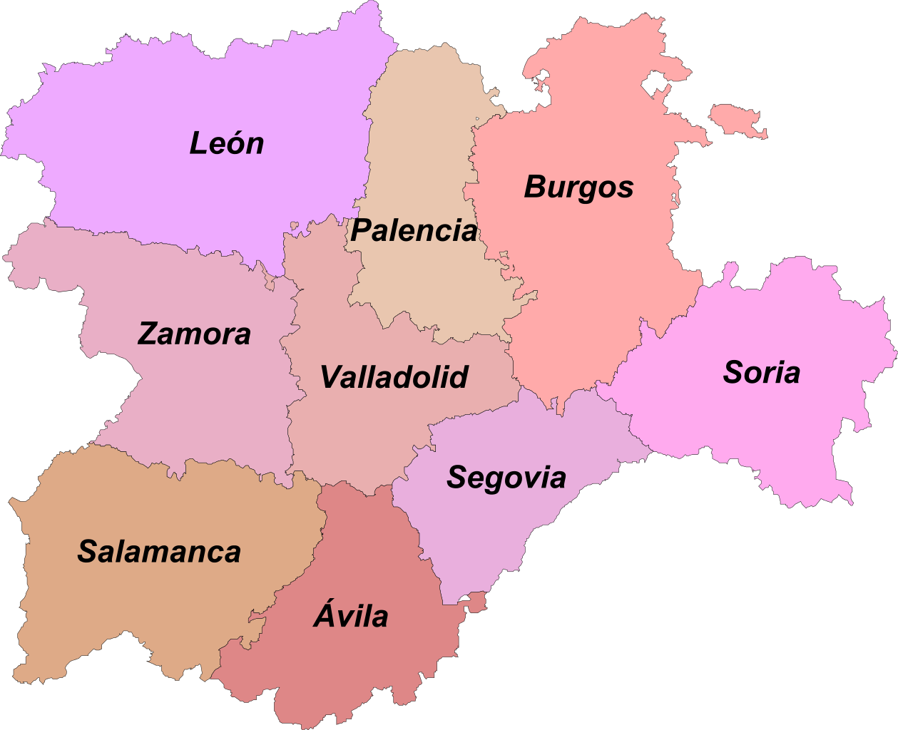

InformacionLocalizaciónLocalidades principalesGeografía de la provinciaHistoriaCulturaNaturalezaTradicionesOtros aspectos de interés |
Burgos_______________________________________________________________________________________________________________________________________________________________ Localización
Burgos es un municipio y una ciudad española situada en la parte norte de la península ibérica. La ciudad es la capital de la provincia homónima integrada en
la comunidad autónoma de Castilla y León. En 2020 contaba con una población empadronada de 176 418 habitantes repartidos en una superficie de 107,06 km², lo
que lo convierte en el 36.º municipio más poblado del país y el segundo de la comunidad autónoma.6 Su área metropolitana, formada por un alto número de
municipios de reducida extensión, cuenta con unos 20 000 habitantes, que junto con el municipio central forman un área urbana de unos 200 000 habitantes.
_______________________________________________________________________________________________________________________________________________________________ Localidades principales
Localización Province Burgos : País España, Comunidad Autónoma Castilla y León.
Grandes ciudades : Burgos, Miranda de Ebro, Aranda de Duero, Briviesca, Medina de Pomar, Villarcayo de Merindad de Castilla la Vieja, Valle de Mena, Lerma,
Roa, Alfoz de Quintanadueñas, Salas de los Infantes, Villagonzalo Pedernales, Belorado, Arcos de la Llana, Espinosa de los Monteros, Quintanar de la Sierra,
Melgar de Fernamental, Villadiego, Merindad de Río Ubierna, Villalbilla de Burgos, Ibeas de Juarros, Condado de Treviño, Cardeñadijo, Pradoluengo,
Cardeñajimeno, Oña, Sasamón, Valle de Tobalina, Huerta de Rey, Quintanilla Vivar, Castrojeriz, Castrillo del Val, Trespaderne, Tardajos, Fuentespina,
Merindad de Montija, Palacios de la Sierra, Villalba de Duero, Modúbar de la Emparedada y Hontoria del Pinar.
_______________________________________________________________________________________________________________________________________________________________ Geografia de la provincia
UbicacionLa ciudad de Burgos se ubica en el centro de la provincia de Burgos, a 244 km al norte de Madrid, en la comunidad autónoma española de Castilla y León. Las coordenadas de la ciudad son latitud 42° 20' 57,1" N y longitud 3° 41' 4,7" O. Su término municipal tiene una extensión de 107,08 km² y se encuentra a 856 msnm (metros sobre el nivel del mar) según el Instituto Geográfico Nacional, llegando a una altitud de 932 msnm en el vértice geodésico del cerro de San Miguel, que preside la ciudad.Su privilegiada situación, aproximadamente en el centro del norte peninsular, la sitúa como ciudad de paso obligado de la meseta hacia País Vasco y Francia, además de suponer el punto de partida de dos de los principales accesos a Cantabria. Se sitúa a 91 kilómetros de Palencia, 114 kilómetros de Logroño, a 115 kilómetros de Vitoria-Gasteiz, a 127 kilómetros de Valladolid, a 142 kilómetros de Soria, a 162 kilómetros de Santander, a 197 kilómetros de Segovia y a 244 kilómetros de Madrid. RelieveSituada en una zona de baja montaña, se encuentra en la zona de confluencia del río Arlanzón y varios de sus afluentes.La ciudad es prácticamente llana en las zonas más pobladas, que se extienden principalmente en la vega formada por los ríos Arlanzón y Vena. A pesar de ello, su término municipal incluye zonas de baja montaña, las cuales en su mayoría se tratan de cerros que no superan los 80 metros de elevación sobre el nivel de la llanura. El centro de la ciudad está situado a una altitud de 859 metros sobre el nivel de mar, mientras que la altitud del municipio varía desde los 827 metros en el último tramo del río Arlanzón en el municipio, hasta los 997 metros al norte, en Las Lomas. HidrografiaEl principal eje fluvial de la ciudad es el río Arlanzón, que atraviesa el término municipal de este a oeste recibiendo los siguientes afluentes:Por la margen derecha: el Vena, que rodeaba la cerca amurallada; el Morquillas que desemboca en el Vena a la altura de Villímar; el Pico antaño afluente del Vena y hasta su desvío al este de Villayuda atravesaba el antiguo pueblo de Gamonal; el arroyo Mataperros en el barrio de San Pedro de la Fuente; el arroyo de Valdecerradillo en la barriada Yagüe y por último el Ubierna en el barrio de Villalonquéjar. Por la margen izquierda el Cardeñadijo, que desemboca entre el Instituto Cardenal Mendoza y la iglesia del Carmen (junto al puente Bessón), el arroyo del Doradillo que desemboca por Fuentes Blancas y el arroyo de Valduercos en la granja de Villargámar. Existe un gran número de arroyos, alguno de los cuales se llegan a secar durante el verano, como el arroyo de Villatoro, el cual desemboca en el río Ubierna. Burgos es la ciudad española con la mejor calidad de agua potable. El abastecimiento se encuentra en la cercana localidad de Arlanzón, captada del río homónimo. Ver video desde youtube - Video realizado por Queverenelmundo _______________________________________________________________________________________________________________________________________________________________ Historia
PrehistoriaEl valle del Arlanzón muestra ocupaciones humanas desde tiempos remotos. A tan solo 15 km del casco urbano se encuentran los yacimientos de Atapuerca, considerados como la cuna del primer europeo. Se han datado restos humanos en los yacimientos de la sierra de Atapuerca con más de 1.000.000 de años de antigüedad. Según las investigaciones arqueopaleontológicas, hasta la fecha hay restos óseos humanos de cuatro especies distintas: Homo antecessor (Pleistoceno Inferior), Homo heidelbergensis (Pleistoceno Medio), Homo neanderthalensis (Pleistoceno Superior) y Homo sapiens (Holoceno), lo cual se correlaciona con los análisis geoespaciales de distribución de asentamientos realizados en la cuenca del Arlanzón.En la ciudad de Burgos también existió un importante asentamiento de la Edad del Bronce a la Primera Edad del Hierro en el cerro del Castillo y en el cerro de San Miguel, además de algunas evidencias celtibéricas de la Segunda Edad del Hierro y romanas, si bien las últimas muy escasas.7 Por el momento, en el Castillo de Burgos solo hay una secuencia de dataciones radiocarbónicas para los niveles de la Edad del Bronce a la Primera Edad del Hierro (niveles del Sector II: NX, NXII, NI, NV y NVI), con unas dataciones de 14C que van desde el 3230±70 al 2400±110 BP.7893132 En otro trabajo arqueológico actualizado se realizó una nueva recopilación y recalibración de todas las dataciones radiocarbónicas del castillo, con la curva de calibración Intcal13.10 Según este estudio, los rangos de las dataciones radiocarbónicas recalibradas al 95% de probabilidad revelan la existencia de ocupaciones desde la Edad del Bronce Antiguo/Medio al tránsito a la Segunda Edad del Hierro. No obstante, aunque no hay dataciones para otros niveles, los trabajos realizados también demuestran que hay importantes restos materiales del Calcolítico en El Castillo (Nivel XIII), y del Neolítico y el Calcolítico en el cerro de San Miguel, pero estos últimos han sufrido importantes alteraciones postdeposicionales por la superposición de los niveles de la Edad del Bronce y de la Edad del Hierro, además de las habituales alteraciones medievales y contemporáneas. La Prehistoria Reciente del Neolítico a la Edad del Bronce no solo está documentada en El Castillo y en el cerro de San Miguel, —al igual que en las cuevas de la sierra de Atapuerca (p. ej., Cueva del Mirador y Cueva Mayor)—, sino que hay abundantes yacimientos en el valle del Arlanzón, con numerosos asentamientos del Neolítico (VI al IV milenio a. C.), Calcolítico (III milenio a. C.) y Edad del Bronce (II milenio a. C.) Edad AntiguaAunque no se tiene constancia de asentamientos importantes en la ciudad, existen numerosos yacimientos de la época romana, sobre todo en las zonas más cercanas al río Arlanzón.Vía romana Por el norte de la ciudad discurre una calzada romana entre los municipios colindantes de Villayerno Morquillas y Tardajos, de este a oeste. Se trata del Itinerario Antonino A-34, que unía Astorga con Burdeos. Actualmente, confundidos como un simple camino rural, sus últimos restos entre el paraje de Casa la Vega y el desvío del ferrocarril sufren un serio peligro de desaparecer por los planes urbanísticos en la zona. El tramo mejor conservado de esta calzada se encuentra en el término municipal de Quintanapalla. Edad MediaEn una crónica árabe se cita una población saqueada en el año 860 denominada "Burchia", que parecía corresponder con la actual Burgos, pero en 2004 se demostró que la población de "Burchia" no tenía nada que ver con la actual ciudad. Cerca del año 884, Alfonso III intentó detener el avance musulmán y envió a Diego Porcelos a levantar una fortificación en un cerro de la margen derecha del río Arlanzón. Esto contribuiría a que el lugar fuese creciendo por su importancia estratégica. En el 931, Fernán González logró reunir el gobierno de los condados de Burgos, Lara, Lantarón, Cerezo y Álava, dejando a Burgos como capital del condado de Castilla.En 1071 Sancho II encerró en Burgos a su hermano García para arrebatarle el reino de Galicia. En 1074 Alfonso VI, rey tras el fallecimiento de su hermano Sancho, cedió su palacio en Burgos para la construcción de la catedral de Santa María. Ese mismo año las también hermanas de este, Elvira y Urraca, trasladan la diócesis de Oca a Gamonal. En 1080, Alfonso VI de León y Castilla convocó un concilio general de sus reinos en la ciudad y declaró oficialmente la abolición de la liturgia hispánica y su sustitución por la romana. Tras la conquista de Toledo en 1085 por Alfonso VI, Burgos perdía la capitalidad del Reino de Castilla en favor de esta ciudad. Esto no paralizó el crecimiento de Burgos, donde se seguirían realizando algunas Cortes. A propósito de esta ciudad, el geógrafo árabe Al-Idrisi escribe en el siglo xii: Es una gran ciudad, atravesada por un río y dividida en barrios rodeados de muros. Uno de estos barrios está habitado particularmente por judíos. La ciudad es fuerte y acondicionada para la defensa. Hay bazares, comercio y mucha población y riquezas. Está situadas sobre la gran ruta de los viajeros. Algunas ciudades españolas y otras del Nuevo Mundo fueron fundadas desde Burgos, como Bilbao, fundación confirmada por el rey Fernando IV de Castilla el 4 de enero de 1301 Edad ModernaEl siglo xvi supuso para Burgos el siglo de su plenitud. Hacia finales del siglo xv y comienzos del siglo xvi, la ciudad, que había nacido sobre un medio agrícola, vuelve las espaldas al campo y se dedica a funciones polarizadas en torno al comercio. Es durante el siglo xvi cuando Burgos explota al máximo las ventajas de su situación geográfica.En la ciudad se legalizó la conquista militar de Navarra por Castilla, ya que el duque de Alba informó de este suceso el 11 de junio de 1515 en las Cortes Castellanas reunidas en la ciudad. A finales del siglo xvi se inició un periodo de decadencia de la ciudad. Las principales causas no fueron exclusivamente internas, pues alcanzaron una categoría superior: las guerras de Flandes, el descubrimiento de América y el centralismo de los monarcas absolutos, agravado con las circunstancias del traslado de la capital a Madrid, entre otras. También influyeron causas de carácter localista, como las famosas pestes, que castigaron especialmente a la ciudad, principalmente en el último cuarto de siglo, diezmando su población. Desarmado el marco económico y social burgalés, decayeron los caminos y las vías de comunicación; Burgos entró en un gran sopor y aislamiento. La crisis se refleja en un documento custodiado en el Archivo Municipal, que dice: «La Ciudad está tan despoblada y sin gente, que la que hay se sale a vivir fuera, por no poder sustentarse y están las casas y edificios casi todos arruinados y por el suelo». En este estado de desolación permanece Burgos hasta las últimas décadas del siglo xviii, en que el despotismo ilustrado pareció renovar levemente la ciudad. Cartel de fiestas de Burgos de 1888. Se intentó restaurar el Consulado; la Real Cédula de 16 de marzo de 1763 reponía la gran institución del Consulado, pero un monopolio lanero no tenía sentido en una economía de escasa exportación. En Burgos había que implantarlo todo artificialmente: el dinero, los mercaderes, los medios de transporte. Desde finales del siglo XVIII y durante el siglo XIX, las medidas de promoción industrial de Cataluña y Vascongadas por parte de los monarcas ilustrados, unido a las políticas proteccionistas, consiguió relanzar la incipiente y poco competitiva industria manufacturera aplicando aranceles a los productos extranjeros. Por ejemplo, una vara de paño flamenco pasó de costar 2 pesetas a costar 6, de forma que los paños catalanes que costaban 5 pesetas pasaron a venderse en toda España y las colonias. Esto trajo consigo una respuesta de ingleses y holandeses aplicando los mismos aranceles, por lo que la lana y el cereal castellanos dejaron venderse. Así, una fanega de trigo castellano pasó de costar 10 pesetas a costar 5, también influido por la irrupción de Estados Unidos en el mercado global del cereal. Castilla vendía sus productos más baratos y estaba obligada a comprar más caro. El resultado fue un empobrecimiento considerable de Castilla con el consiguiente estancamiento comercial e industrial. El Consulado languideció muy pronto y a partir de 1781 se orientó hacia una Academia de Artes y Oficios y otras actividades benéfico-culturales muy a tono con la mentalidad de la época. Algo semejante sucedió con la Facultad de Medicina, establecida en el antiguo Hospital de la Concepción, instaurada en 1799, desapareciendo hacia 1817. En esta época la ciudad experimentó superficiales reformas de urbanismo: «El puente de San Pablo, la reposición de manguardas, la composición de caminos, el Consistorio que se va a construir en el lugar de unos corredores antiguos e indecentes». La Guerra de la Independencia Española afectó especialmente a la economía castellana. Las cosechas de 1811 y 1812 fueron malas y escasas debido a la incertidumbre que sentían los agricultores ya que los ejércitos y las guerrillas se aprovisionaron sobre el terreno mediante requisas. La falta de subsistencia extendió el hambre y provocó una intensa crisis de mortandad en 1812. No solo cayó la producción agrícola, hubo industrias que casi desaparecieron como la textil lanera de Castilla, ya que los rebaños de ovejas merinas sirvieron para alimentar a las tropas. Edad ContemporaneaDurante la guerra civil española, la ciudad de Burgos fue sede de la Junta de Defensa Nacional. En la ciudad tuvo también lugar la formación del Primer Gobierno nacional de España (1939-1939), durante el cual el dictador Francisco Franco asumió oficialmente los cargos de jefe de Estado y de Gobierno. El gobierno franquista permaneció en Burgos hasta el 18 de octubre de 1939, cuando se trasladó a Madrid. El 9 de agosto se forma en esta ciudad el Segundo Gobierno franquista.El 3 de diciembre de 1970, tuvo lugar el llamado Proceso de Burgos, un juicio contra dieciséis miembros de la organización terrorista ETA acusados del asesinato de tres personas. Las condenas a muerte de seis de los encausados no se ejecutaron, conmutándose por penas de reclusión. _______________________________________________________________________________________________________________________________________________________________ Cultura
La Festividad de San Lesmes Abad se celebra el domingo de enero más cercano al día 30, es una de las más queridas por los burgaleses, pues constituye un
homenaje al patrón de la ciudad y una ocasión para estrechar lazos con las localidades francesas hermanadas con Burgos, como Loudun.
_______________________________________________________________________________________________________________________________________________________________ Naturaleza
Parque del CastilloEl cerro de San Miguel es uno de los pulmones de la ciudad. La ciudad nació en este lugar y fue creciendo por la falda sur del cerro del castillo. Progresivamente, los barrios altos fueron desapareciendo. Tras la voladura del propio castillo por las tropas napoleónicas en 1813, se ubicaron posteriormente instalaciones militares. En los años cincuenta, el ingeniero Mariano Jaquotot, que más tarde sería alcalde de la ciudad, decide poblar de arbolado el monte del Castillo, que hasta el momento había permanecido totalmente desnudo.Además de las ruinas del Castillo, su museo, el pozo medieval y las galerías subterráneas (todo ello visitable), en la zona hay dos bares-restaurantes, también hay algunos tramos de las murallas de la ciudad que rodean el parque (San Esteban, calle Las Murallas) y varias zonas de aparcamiento en distintos lugares del cerro, tanto junto al Castillo como cercanas al mirador sobre la ciudad. Muy cercano al parking junto al recinto del Castillo se encuentra una de las atracciones de ocio del parque, tanto para niños como para adultos, se trata de un parque de cuerdas entre los pinares con varios circuitos para distintas edades. También en el cerro de San Miguel se encuentra el Centro de Conservación de Aves en el que se recuperan dichos animales. Cerca existe una pista de carreras de galgos. También dispone de zonas recreativas para niños con columpios y circuito por todo el parque para practicar ejercicio con instalaciones al aire libre, así como un recorrido para bicis BTT y también si se desea se puede practicar senderismo. Así mismo, hay una zona aterrazada con jardines y una fuente ornamental entre el castillo y el mirador. Lo más destacable del parque, en cuanto a vistas, aparte de las que se disfrutan desde el torreón más alto del castillo, son las vistas desde el Mirador, desde el cual se obtiene una gran panorámica de una buena parte de la ciudad, especialmente de la catedral y el centro histórico. Una cartela metálica en la barandilla permite identificar los lugares y monumentos más característicos de la ciudad. _______________________________________________________________________________________________________________________________________________________________ Tradiciones
A lo largo y ancho de esta extensa provincia los pueblos aún atesoran un rico patrimonio etnológico integrado, entre otros, por arquitectura, antiguos oficios,
costumbres y fiestas populares. Este patrimonio es la herencia acumulada del modo de vida que los burgaleses han llevado durante siglos.
_______________________________________________________________________________________________________________________________________________________________ Otros aspectos de interes
La ciudad de Burgos cuenta con dos grandes centros sanitarios de titularidad pública, gestionados por Sanidad Castilla y León (Sacyl):
+5 ° C +13° -4° Burgos Domingo, 30
Previsión para 7 días _______________________________________________________________________________________________________________________________________________________________ Mapa Castilla y LeonCorreo: david.alomon@educa.cyl.es |